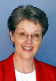
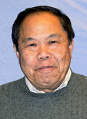
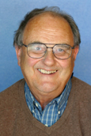
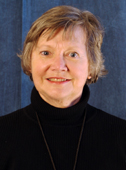
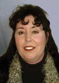
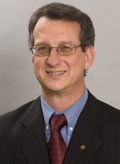

|
|
Fort Vancouver Regional Library District
Board of Trustees
The Library Board is composed of seven positions representing the Fort
Vancouver Regional Library District. Since they are not compensated for
their time, Board members are essentially volunteers. They are appointed
by a joint resolution of the commissioners of Clark, Skamania and Klickitat
Counties, generally for 7-year terms. The three counties have signed a
Memorandum of Understanding
(it includes an amendment), to specify details about Board members' appointments. Clark County has a resolution that describes their appointing procedures.
2007 Board Meetings | Meeting Agenda | Minutes | Committee Meetings
Send an email to the library board.
Board officers for 2007:
-Karen Peterson, Chair
-Jack Burkman, Vice-Chair
-Rose Smith, Secretary
Board members and their representative areas:
Karen Peterson
Dr. Karen Peterson's position represents Clark County and runs through December 31, 2010.
Karen has a strong educational background. Majoring in child development, she received her B.A. and M.S. from Texas Woman's University before moving to Iowa and obtaining her Ph.D. She taught at Central Michigan University for five years, then moved to Pullman, where she worked as a professor and department chair in Human Development at Washington State University. In 1994, she transferred to WSU-Vancouver, where she is Professor of Human Development. Karen has also published numerous articles on topics related to child development and developmental theories.
Her strong interest in libraries led her to apply for a trustee position. "My mother was a librarian and I have always used the library," Karen said. "I worked in a library for several summers during my teen years, doing cataloging, reading shelves, that kind of thing."
Karen feel strongly about the importance of libraries in a community. "Libraries are an invaluable resource," she notes. "They give people access to information and provide a forum for different forms of expression. And the most fabulous thing of all is that they are free."
return to top
Merle Koplan
The City of Vancouver makes recommendations for appointments to two library board positions (positions 2 and 5). Merle Koplan holds one of these positions and her term runs through December 31, 2011.
Merle grew up in the other Vancouver (Canada) and completed a degree in elementary education from the University of British Columbia.
Formerly single parents, Merle and her husband Keith merged their two families of six children when the kids ranged in age from 6 to 13. All six children have since finished high school and have gone on to graduate from Washington colleges. She has eight grandchildren. Merle considers their family her proudest achievement.
These days you'll usually find Merle at Koplan's Home Furnishings in downtown Vancouver where she is not only a full partner in the business, but is involved in buying, sales, customer relations and interior decorating. The family-owned company has been in business since 1948.
Merle and her family are long-time supporters and users of the library. She's also a strong advocate for public library services and believes, "A good library is an integral part of a livable community and a resource that an entire community can use no matter what their age and interests. Vancouver is underserved in library facilities, so one of my goals as a member of the library Board of Trustees is to work towards larger libraries."
return to top
Bill Yee

Bill Yee's position represents Skamania County and runs from January 1, 2006 through December 31, 2012.
Born and raised in Portland, Bill has a bachelor of science degree in electrical engineering from Oregon State University and a bachelor of arts degree from Portland State University. He is also a veteran, having served four years in the U.S. Air Force on active duty. For 25 years, Bill worked as general manager for Skamania County Public Utilities District. Before that he was chief engineer for Richland City Light.
A frequent library user and avid supporter, Bill is a member of Friends of Stevenson Community Library and also participated on our citizen Strategic Planning Committee in 2004-2005.
Bill's hobbies include collecting antique clocks (specifically those with wooden movements) and ancient coins. His favorite reading material is science fiction.
return to top
Jerry King

Reappointed for a second term to represent Clark County, Jerry King's position continues through December 31, 2008.
Jerry was born in Ferndale, Washington. He earned a bachelor's degree in history at the University of Washington and completed his law degree there in 1959.
For 29 years, Jerry worked as Vancouver's City Attorney before retiring in 1994. When King first joined the City in 1965, Vancouver's population was 38,000 and the City Council met in Library Hall. The next year the weekly sessions moved to the present Vancouver City Hall located between East 13th Street and Mill Plain. Over the years, Jerry worked with the challenges of our increasingly complex society and government requiring more and more safeguards and regulations related to employment, land use and the environment.
Jerry remembers the very first book he checked out of a library. He was four years old, the place was Bellingham and the book was Muggins Mouse by Marjorie Barrows. He has been frequenting libraries and enjoying books ever since.
Even though Jerry is retired, he's a very busy person. These days, you'll find Jerry active in his church, keeping in touch with his son who lives in Massachusetts and involved in community activities.
The Vancouver Community Library was on Jerry's lunch hour stop three days a week during his years at City Hall. He says he has always loved libraries and is enthusiastic about serving on the library board. He is particularly interested in helping to maintain good libraries for residents of the district.
return to top
Jack Burkman
Representing Clark County, Jack Burkman's term continues through December 2009.
Jack attended grade school in eastern Idaho and, at the age of 12, moved to western Montana, where he lived
until graduating from college. It was in grade school that he had his first interaction with a public library s
ystem. "We didn't have much money and rarely bought books. But I was an avid reader, so the public library was
very important to me," he recalled.
After completing a bachelor's degree in mechanical engineering from Montana State University,
Jack and his wife Sherry moved to Fort Collins, Colorado, where they started a family. Jack
worked there as a manufacturing engineer for Hewlett Packard. In 1985, they transferred to Vancouver to be back
amid mountains, trees, and wildlife. Recently Jack retired from his postion as R & D manager with Hewlett Packard.
Jack is an active volunteer. He has volunteered with neighborhood associations, the Clark County Planning Commission, numerous city and county committees and groups, CTRAN, and Southwest Washington Clean Air Agency, as well as serving a term on the Vancouver City Council. He has also worked with families struggling with defiant and drug-addicted teens.
Jack and his wife Sherry have three grown children. His hobbies include photography, computers, rebuilding sports cars, and of course reading, especially non-fiction and science fiction.
American author Patricia McKissack said, "A library is a doorway to freedom," and Jack believes that today this is even more important. "Our modern, technological world offers tremendous knowledge and information to those that can access it - unprecedented in our history," he said. "The public library is key to ensuring everyone has access to this information, regardless of income or education level."
return to top
Bonnie Reynolds

Our newest board member, Bonnie Reynolds, represents Klickitat County. Her term continues through December 31, 2013.
Bonnie earned a bachelors degree in sociology and psychology from Elizabethtown College in Elizabethtown, Pa. She studied school psychology at Millersville State University and graduated from Lewis and Clark Graduate School of Professional Studies in 1985. After graduating, Bonnie was a family therapist for the Oregon Children's Services Division, then a mental health professional for Mid Columbia Center for Living in Hood River. From 1997 to 2001, she worked in private practice as a mental health counselor. She is currently a domestic relations mediator under contract with the State of Oregon.
Bonnie has served on the board of directors for the Trout Lake School and the Columbia Arts Gallery. She was on the founding board of directors for the Trout Lake Arts Council and served on the Council for 10 years. She has served on various other education and service committees. Currently, Bonnie is involved in developing forums on the topic of peaceful resolution of conflict for the Trout Lake Presbyterian Church.
In her free time, Bonnie enjoys art in all forms but in particular literature, cinema, music and fine art. "The nurture of creative and intellectual people from all walks of life is essential to the maintenance and development of a viable culture," Bonnie said, noting that, "the public library is the most democratic institution I can think of in the service of that goal in that it is free to anyone who chooses to use it."
return to top
Rose Smith

Rose was appointed to the Board of Trustees in December 2004 to complete an unfinished term. She represents Clark County and her term continues through December 31, 2007.
Rose is a realtor and a former La Center School Board member. She was actively involved as vice president of the Friends of La Center Community Library during the fundraising and remodeling phase of the La Center branch building, which opened in 2004.
She and her husband reside at and run a historic farmstead, Stratton Farm, just outside of La Center.
return to top
Bruce Ziegman

Bruce Ziegman developed an interest in libraries early on. "I have always been library-oriented," he notes, adding, "I worked in a library as a Page while going to school and that gave me a feel for how libraries work and what librarians do. That, coupled with my natural affinity for books led to what has turned out to be a fascinating career."
Born and raised in Seattle, Washington, Bruce attended the University of Washington, where he obtained his BA in History in 1970 followed by a Masters of Library Science in 1973. Subsequent coursework in a variety of subjects include leadership, management, accounting & finance, negotiations and writing skills.
After obtaining his MLS, Bruce landed a position at the North Central Regional Library's Wenatchee branch as a reference librarian. Several months later, he promoted to Coordinator of Extension Services, which included the responsibility for services and operations of 23 branch libraries. In 1975, he took the Coordinator of Central Services position and supervised book selection, technical processing and interlibrary loan for the system.
From 1977 to 1989, Bruce worked for a library automation organization known as the Western Library Network (WLN). His first three years there were spent providing training and customer support for a variety of WLN software programs. He also obtained seven years experience as Manager of Library (Customer) Services and two years as Director of the organization.
Bruce joined Fort Vancouver Regional Library District as Assistant Executive Director in 1989 and became Executive Director in 2001.
Along with his energy, creativity and enthusiasm, Bruce shares his strong belief in the value of libraries: "Libraries add so much to society in so many different ways--culturally, intellectually, economically, and for just plain entertainment value. Libraries offer multiple learning and entertainment choices of interest to virtually anyone who chooses to avail themselves of the opportunities."
In his free time, Bruce enjoys spending time with his family, playing golf, and is an avid Husky fan.
return to top
Updated Jan. 4, 2007
|